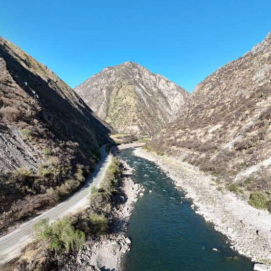
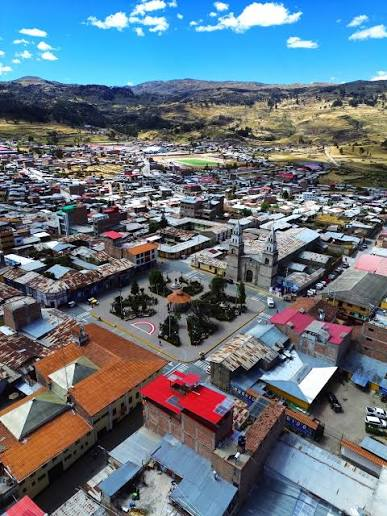
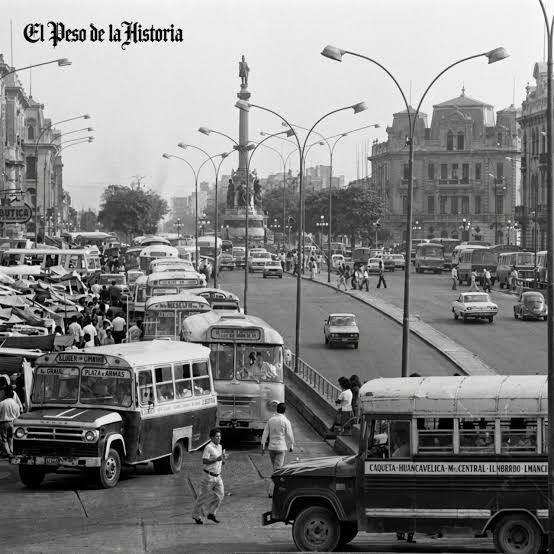
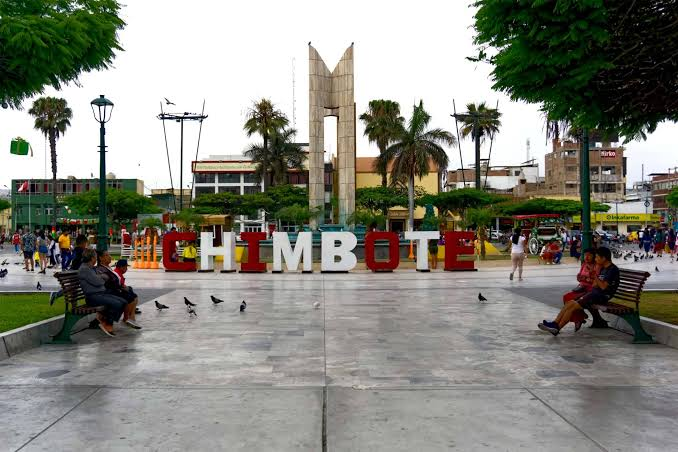

Jose Maria Arguedas | University of San Marcos
Inspired by the spirit of Peruvian writer José María Arguedas, we invite you to feel the living soul of the Andes. Navigate the sacred waters of the Apurímac and Pachachaca rivers with expert local guides and unforgettable adventure.
warning: The works you are about to access are in Spanish. If you want to learn Spanish, this is an excellent choice; otherwise, please look for content in other languages.
If you find this author’s literary works interesting, here are his books.
places inspired by his literary works
His masterpiece is based on his childhood and teenage years in the city of Cusco (the beginning of the story) and, mainly, in the city of Abancay (Apurímac), the Patibamba estate, the bridge over the Pachachaca River and the religious boarding school where he studied.

Based on the town of Puquio (capital of the province of Lucanas, Ayacucho) and its ayllus (K'ayau, Pichk'achuri, Chaupi and K'ollana). The Andean bullfight (turupukllay) takes as its setting the Pichk'achuri plaza and the tutelary hills such as K'arwarasu

Based on his own experience as a political prisoner in the dreaded El Sexto Prison, a former penitentiary located on Alfonso Ugarte Avenue, in the heart of Cercado de Lima.

It is the only one of his great novels set on the northern coast of the country, specifically in the bustling fishing port of Chimbote, marked by the anchovy fishing boom and Andean migration.
